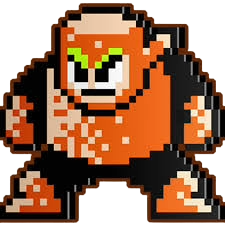

TIPS
- Battons: Hang from trees and attack by swooping down. They can’t be hit while hanging, so wait for them to descend and shoot them with Metal Blades StrategyWiki+1.
- Robbits: Hop and fire carrot missiles. Shoot them before they attack; a flurry of blades is effective StrategyWiki+1.
- Frienders (Wolf Robots): Fire a downward flame arc that arcs back up. Jump into the air to avoid the fire while firing back. Stay on the second-lowest platform to safely throw blades StrategyWiki+2.
- Monking (Mechanical Apes): Latch onto platforms and jump. Use Metal Blade shots aimed downward to hit them before they leap StrategyWiki+1.
- Pipis (Birds): Drop eggs that hatch into more birds. Clear them before they hatch to avoid a swarm StrategyWiki+1.
- Kukku (Leaping Ostriches): Jump away when they charge; they’ll land where you can safely go under
ROLE
- Stage layout: The level starts in a grassy forest, descends into a cave with multiple enemy encounters, and ends with the boss gate megaman.fandom.com.
- Enemy encounters: Players face Battons, Robbits, Frienders (large blue wolf robots), Monkings, Pipis, and Kukkus (mechanical birds)
ABILITIES
- Form & Function: Leaf‑shaped pieces of Ceratanium, sharpened at the edges, levitated using electromagnetism thecodex.wiki+1.
- Defensive Use: Can deflect most projectiles, acting as a shield.